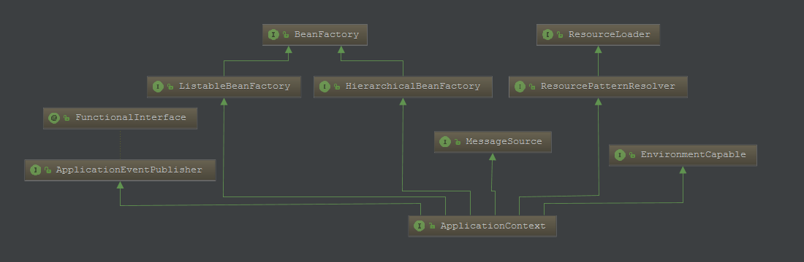
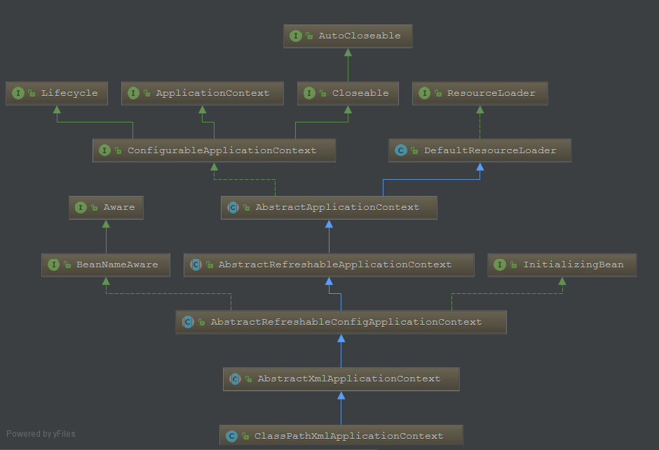

在前面我们简单的分析了BeanFactory的结构，ListableBeanFactory，HierarchicalBeanFactory，AutowireCapableBeanFactory。主要核心类DefaultListableBeanFactory，通过编程启动IOC容器 将BeanFactory的功能逐渐的剥离开来，方便我们理解整个架构。
ClassPathResource resource = new ClassPathResource("spring.xml");
DefaultListableBeanFactory factory = new DefaultListableBeanFactory();
XmlBeanDefinitionReader reader = new XmlBeanDefinitionReader(factory);
reader.loadBeanDefinitions(resource);
MyBean bean = factory.getBean(MyBean.class);
System.out.println(bean.toString());DefaultListableBeanFactory 实现了 BeanDefinitionRegistry接口，具有了注册bean的功能，
读取资源则通过单独的模块来实现，这里委托为XmlBeanDefinitionReader来读取xml配置文件
在前面我们可以很方便的通过编程的方式来手工控制这些配置的容器的建立过程了，但是，在Spring 中，系统以及为我们提供了许多已经定义好的容器的实现，如果说BeanFactory是Spring的"心脏",那么ApplicationContext就是完整的"身躯"了。ApplicationContext由BeanFactory派生而来，提供了更多面向实际应用的功能，所以说，ApplicationContext是一个高级形态意义的IOC容器，下面我们就来慢慢的认识一下它。
再来看一段代码：
ClassPathXmlApplicationContext context = new ClassPathXmlApplicationContext("spring.xml");
MyBean bean = context.getBean(MyBean.class);
System.out.println(bean.toString());这个看起来是不是比 DefaultListableBeanFactory 简单多了，其实所谓的高级容器也就是把最基础的容器进行了封装，因此在最开始时我们才使用最基础的BeanFactory来展示，这样更容易理解。

看到如上的继承体系，应该就更能明白ApplicationContext 是Spring BeanFactory的高级形态的容器了。
@Nullable
String getId();
/**
* Return a name for the deployed application that this context belongs to.
* @return a name for the deployed application, or the empty String by default
*/
String getApplicationName();
/**
* Return a friendly name for this context.
* @return a display name for this context (never {@code null})
*/
String getDisplayName();
/**
* Return the timestamp when this context was first loaded.
* @return the timestamp (ms) when this context was first loaded
*/
long getStartupDate();
/**
* Return the parent context, or {@code null} if there is no parent
* and this is the root of the context hierarchy.
* @return the parent context, or {@code null} if there is no parent
*/
@Nullable
ApplicationContext getParent();
/**
* Expose AutowireCapableBeanFactory functionality for this context.
* <p>This is not typically used by application code, except for the purpose of
* initializing bean instances that live outside of the application context,
* applying the Spring bean lifecycle (fully or partly) to them.
* <p>Alternatively, the internal BeanFactory exposed by the
* {@link ConfigurableApplicationContext} interface offers access to the
* {@link AutowireCapableBeanFactory} interface too. The present method mainly
* serves as a convenient, specific facility on the ApplicationContext interface.
* <p><b>NOTE: As of 4.2, this method will consistently throw IllegalStateException
* after the application context has been closed.</b> In current Spring Framework
* versions, only refreshable application contexts behave that way; as of 4.2,
* all application context implementations will be required to comply.
*/
AutowireCapableBeanFactory getAutowireCapableBeanFactory() throws IllegalStateException;在ApplicationContext容器中，我们以常用的ClassPathXmlApplicationContext的实现来分析ApplicationContext容器的设计原理

在ClassPathXmlApplicationContext 的设计中，其主要的功能在基类AbstractXmlApplicationContext中已经实现了。
public ClassPathXmlApplicationContext(
String[] configLocations, boolean refresh, @Nullable ApplicationContext parent)
throws BeansException {
super(parent);
setConfigLocations(configLocations);
if (refresh) {
refresh();
}
}ClassPathXmlApplicationContext 看起来还是很简单的，主要的实现都在基类里面实现了，这是只是负责调用。
父容器的设置在 AbstractApplicationContext中
/** Parent context */
@Nullable
private ApplicationContext parent;
@Override
public void setParent(@Nullable ApplicationContext parent) {
this.parent = parent;
if (parent != null) {
Environment parentEnvironment = parent.getEnvironment();
if (parentEnvironment instanceof ConfigurableEnvironment) {
getEnvironment().merge((ConfigurableEnvironment) parentEnvironment);
}
}
}如果存在父容器，那么会合并两者的环境配置Environment。这里Environment并不是我们的重点。
这个 refresh()过程会牵涉IOC容器启动的一系列复杂操作，同时，对于不同容器的实现，这些操作都是类似的，因此在基类中将它们封装好。所以，我们在ClassPathXmlApplicationContext 的设计中看到的只是一个简单的调用。关于这个refresh()在IOC容器启动时的具体实现，这个在后面再来分析，这里就不展开了。
简单来说，IOC容器的初始化由前面介绍的refresh()方法来启动的，这个方法标志着IOC容器的正式启动。具体来说，这个启动包括BeanDefinition的Resouce定位、载入和注册三个基本过程。如果我们了解如何编程式地使用IOC容器，就可以清楚得看到Resource定位和载入过程的接口调用。在下面的内容里，我们将会详细分析这三个过程的实现。
Spring把这三个过程分开，并使用不同的模块来完成，如使用响应的ResourceLoader、BeanDefinitionReader等模块，通过这样的设计方式，可以让用户更加灵活地对这三个过程进行剪裁或扩展，定义出最适合自己的IOC容器的初始化过程。
Resource 定位
第一个过程就是Resource 定位过程。这个Resource 定位指的是BeanDefinition的资源定位，它由ResourceLoader通过统一的Resource接口来完成，这个Resource对各种形式的BeanDefinition的使用都提供了统一接口。
BeanDefinition的载入
第二个过程是BeanDefinition的载入。这个载入过程是把用户定义好的Bean表示成IOC容器内部的数据结构，而这个容器内部的数据结构就是BeanDefinition，具体来说，这个BeanDefinition实际上就是POJO对象在IOC容器中的抽象，通过这个BeanDefinition定义的数据结构，使IOC容器能够方便地对POJO对象也就是Bean进行管理。
注册BeanDefinition
第三个过程是向IOC容器注册这些BeanDefinition的过程，这个过程是通过调用BeanDefinitionRegistry接口的实现来完成的。这个注册过程把载入过程中解析得到的BeanDefinition向IOC容器进行注册，通过分析，我们可以看到，在IOC容器内部将BeanDefinition注入到一个ConcurrentHashMap中去，IOC容器就是通过这个HashMap来持有这些BeanDefinition数据的。
以编程的方式使用DefaultListableBeanFactory时，首先定义一个Resource来定位容器使用的BeanDefinition。这时使用的是ClassPathResource,这意味着Spring会在类路径中去寻找以文件形式存在的BeanDefinition信息。
ClassPathResource resource = new ClassPathResource("spring.xml");这里定义的Resource 并不能由DefaultListableBeanFactory直接使用，Spring通过BeanDefinitionReader来对这些信息进行处理。在这里，我们也可以看到使用ApplicationContext相对于直接使用DefaultListableBeanFactory的好处。因为ApplicationContext 中，Spring已经为我们提供了一系列加载不同Resource的读取器的实现，而DefaultListableBeanFactory只是一个纯粹的IOC容器，需要为它配置特定的读取器才能完成这些功能。当然，有利就有弊，使用DefaultListableBeanFactory 这种更底层的容器，能提高定制IOC容器的灵活性。
下面以ClassPathXmlApplicationContext 为例，通过分析这个ApplicationContext的实现来看看它是怎样完成这个Resource定位过程的。
这个ClassPathXmlApplicationContext 已经通过继承AbstractApplicationContext具备了ResourceLoader读入Resource定义的BeanDefinition的能力，因为AbstractApplicationContext的基类是DefaultResourceLOader。
在前面ClassPathXmlApplicationContext 的源码中，我们知道核心代码在refresh方法里面。下面是refresh的代码，但是并不会详细分析，我们的工作主要还是拆,目前只分析我们需要的。
AbstractApplicationContext -> refresh():
public void refresh() throws BeansException, IllegalStateException {
synchronized (this.startupShutdownMonitor) {
// Prepare this context for refreshing.
prepareRefresh();
// Tell the subclass to refresh the internal bean factory.
ConfigurableListableBeanFactory beanFactory = obtainFreshBeanFactory();
// Prepare the bean factory for use in this context.
prepareBeanFactory(beanFactory);
try {
// Allows post-processing of the bean factory in context subclasses.
postProcessBeanFactory(beanFactory);
// Invoke factory processors registered as beans in the context.
invokeBeanFactoryPostProcessors(beanFactory);
// Register bean processors that intercept bean creation.
registerBeanPostProcessors(beanFactory);
// Initialize message source for this context.
initMessageSource();
// Initialize event multicaster for this context.
initApplicationEventMulticaster();
// Initialize other special beans in specific context subclasses.
onRefresh();
// Check for listener beans and register them.
registerListeners();
// Instantiate all remaining (non-lazy-init) singletons.
finishBeanFactoryInitialization(beanFactory);
// Last step: publish corresponding event.
finishRefresh();
}
catch (BeansException ex) {
if (logger.isWarnEnabled()) {
logger.warn("Exception encountered during context initialization - " +
"cancelling refresh attempt: " + ex);
}
// Destroy already created singletons to avoid dangling resources.
destroyBeans();
// Reset 'active' flag.
cancelRefresh(ex);
// Propagate exception to caller.
throw ex;
}
finally {
// Reset common introspection caches in Spring's core, since we
// might not ever need metadata for singleton beans anymore...
resetCommonCaches();
}
}
}refresh 里面就是Spring的启动流程，在 refresh -> obtainFreshBeanFactory 会创建一个BeanFactory，而obtainFreshBeanFactory在子类AbstractRefreshableApplicationContext中实现。
protected final void refreshBeanFactory() throws BeansException {
if (hasBeanFactory()) {
destroyBeans();
closeBeanFactory();
}
try {
DefaultListableBeanFactory beanFactory = createBeanFactory();
beanFactory.setSerializationId(getId());
customizeBeanFactory(beanFactory);
//载入BeanDefinition,其余的方法暂时不分析
loadBeanDefinitions(beanFactory);
synchronized (this.beanFactoryMonitor) {
this.beanFactory = beanFactory;
}
}
catch (IOException ex) {
throw new ApplicationContextException("I/O error parsing bean definition source for " + getDisplayName(), ex);
}
}在这个方法中，通过 createBeanFactory 构建一个IOC容器供ApplicationContext 使用。这个IOC容器就是我们前面提到过的DefaultListableBeanFactory，同时，它启动了loadBeanDefinitions 来载入BeanDefinition，这个过程和前面用编程式的方法来使用IOC（XmlBeanFactory）的过程非常类似。
AbstractXmlApplicationContext ->loadBeanDefinitions:
protected void loadBeanDefinitions(DefaultListableBeanFactory beanFactory) throws BeansException, IOException {
// Create a new XmlBeanDefinitionReader for the given BeanFactory.
XmlBeanDefinitionReader beanDefinitionReader = new XmlBeanDefinitionReader(beanFactory);
// Configure the bean definition reader with this context's
// resource loading environment.
beanDefinitionReader.setEnvironment(this.getEnvironment());
beanDefinitionReader.setResourceLoader(this);
beanDefinitionReader.setEntityResolver(new ResourceEntityResolver(this));
// Allow a subclass to provide custom initialization of the reader,
// then proceed with actually loading the bean definitions.
initBeanDefinitionReader(beanDefinitionReader);
loadBeanDefinitions(beanDefinitionReader);
}设置BeanDefinitionReader,因为AbstractApplicationContext 继承DefaultResourceLoader ，因此ResourceLoader 可以设置成this,继续跟踪代码,在 AbstractBeanDefinitionReader -> loadBeanDefinitions中：
public int loadBeanDefinitions(String location, @Nullable Set<Resource> actualResources) throws BeanDefinitionStoreException {
ResourceLoader resourceLoader = getResourceLoader();
if (resourceLoader instanceof ResourcePatternResolver) {
// Resource pattern matching available.
try {
Resource[] resources = ((ResourcePatternResolver) resourceLoader).getResources(location);
//在载入和解析中分析
int loadCount = loadBeanDefinitions(resources);
if (actualResources != null) {
for (Resource resource : resources) {
actualResources.add(resource);
}
}
return loadCount;
}
catch (IOException ex) {
//...省略
}
}
else {
//...省略代码
}
}Resource[] resources = ((ResourcePatternResolver) resourceLoader).getResources(location);通过 resourceLoader来获取配置资源，而这个resourceLoader 就是 ClassPathXmlApplicationContext,这个getResources 方法在父类AbstractApplicationContext中实现
AbstractApplicationContext -> getResources:
public Resource[] getResources(String locationPattern) throws IOException {
return this.resourcePatternResolver.getResources(locationPattern);
}resourcePatternResolver 在初始化的时候，被设置成了 PathMatchingResourcePatternResolver
public AbstractApplicationContext() {
this.resourcePatternResolver = getResourcePatternResolver();
}
protected ResourcePatternResolver getResourcePatternResolver() {
return new PathMatchingResourcePatternResolver(this);
} 这样就可以通过PathMatchingResourcePatternResolver 来获取资源了。
在完成BeanDefinition的Resource定位的分析后，下面来了解整个BeanDefinition信息的载入过程。对IOC容器来说，这个载入过程，相当于把定义的BeanDefinition在IOC容器中转化成一个Spring内部表示的数据结构的过程。IOC容器对Bean的管理和依赖注入功能的实现，是通过对其持有的BeanDefinition进行各种相关操作来完成的。这些BeanDefinition数据在IOC容器中通过一个HashMap来保持和维护。
在前面，我们定位资源的时候，展示了AbstractBeanDefinitionReader 中的loadBeanDefinitions 方法，在里面会调用下面的代码：
int loadBeanDefinitions(Resource resource) throws BeanDefinitionStoreException;但这个方法在AbstractBeanDefinitionReader 类里是没有实现的，它是一个接口方法，具体的实现在 XmlBeanDefinitionReader中，在读取器中，需要得到代表XML文件的Resource,因为这个Resource对象封装了对XML文件的I/O操作，所以读取器可以在打开I/O流后得到XML的文件对象，有了这个对象文件以后，就可以按照Spring的Bean定义规则来对这个XML的文档树进行解析了，这个解析是交给BeanDefinitionParserDelegate来完成的。
XmlBeanDefinitionReader -> loadBeanDefinitions:
public int loadBeanDefinitions(EncodedResource encodedResource) throws BeanDefinitionStoreException {
Set<EncodedResource> currentResources = this.resourcesCurrentlyBeingLoaded.get();
if (currentResources == null) {
currentResources = new HashSet<>(4);
this.resourcesCurrentlyBeingLoaded.set(currentResources);
}
if (!currentResources.add(encodedResource)) {
//省略代码
}
try {
InputStream inputStream = encodedResource.getResource().getInputStream();
try {
InputSource inputSource = new InputSource(inputStream);
if (encodedResource.getEncoding() != null) {
inputSource.setEncoding(encodedResource.getEncoding());
}
return doLoadBeanDefinitions(inputSource, encodedResource.getResource());
}
finally {
inputStream.close();
}
}
catch (IOException ex) {
//省略代码
}
finally {
//省略代码
}
}接着看doLoadBeanDefinitions 方法：
protected int doLoadBeanDefinitions(InputSource inputSource, Resource resource)
throws BeanDefinitionStoreException {
try {
//获取XML文件的Document对象
Document doc = doLoadDocument(inputSource, resource);
//对BeanDefinition解析的过程
return registerBeanDefinitions(doc, resource);
}
//省略部分代码
}这里我们就不去分析如何得到Document对象的了，我们关心的是Spring的BeanDefinion是怎么按照Spring的Bean语义要求进行解析并转化为容器内部数据机构的，这个过程是在registerBeanDefinitions 中完成的。
public int registerBeanDefinitions(Document doc, Resource resource) throws BeanDefinitionStoreException {
//通过 BeanDefinitionDocumentReader 对XML的BeanDefinition 进行解析
BeanDefinitionDocumentReader documentReader = createBeanDefinitionDocumentReader();
int countBefore = getRegistry().getBeanDefinitionCount();
//具体解析过程
documentReader.registerBeanDefinitions(doc, createReaderContext(resource));
return getRegistry().getBeanDefinitionCount() - countBefore;
}BeanDefinition的载入分成两部分，首先通过调用XML的解析器得到document对象，但这些document对象并没有按照Spring的Bean规则进行解析。在完成通用的XML解析过后，才是按照Spring的Bean规则进行解析的地方，这个按照Spring的Bean规则进行解析的过程是在documentReader中实现的，这里使用的documentReader是默认配置好的DefaultBeanDefinitionDocumentReader。
protected BeanDefinitionDocumentReader createBeanDefinitionDocumentReader() {
return BeanUtils.instantiateClass(this.documentReaderClass);
}private Class<? extends BeanDefinitionDocumentReader> documentReaderClass =
DefaultBeanDefinitionDocumentReader.class;在 DefaultBeanDefinitionDocumentReader-> parseDefaultElement解析了配置
private void parseDefaultElement(Element ele, BeanDefinitionParserDelegate delegate) {
if (delegate.nodeNameEquals(ele, IMPORT_ELEMENT)) {
importBeanDefinitionResource(ele);
}
else if (delegate.nodeNameEquals(ele, ALIAS_ELEMENT)) {
processAliasRegistration(ele);
}
else if (delegate.nodeNameEquals(ele, BEAN_ELEMENT)) {
processBeanDefinition(ele, delegate);
}
else if (delegate.nodeNameEquals(ele, NESTED_BEANS_ELEMENT)) {
// recurse
doRegisterBeanDefinitions(ele);
}
}对bean的配置的解析处理是通过processBeanDefinition 方法
protected void processBeanDefinition(Element ele, BeanDefinitionParserDelegate delegate) {
// 将 <bean /> 节点中的信息提取出来，然后封装到一个 BeanDefinitionHolder 中
BeanDefinitionHolder bdHolder = delegate.parseBeanDefinitionElement(ele);
if (bdHolder != null) {
// 如果有自定义属性的话，进行相应的解析，先忽略
bdHolder = delegate.decorateBeanDefinitionIfRequired(ele, bdHolder);
try {
//这里是向IOC容器注册BeanDefinition
BeanDefinitionReaderUtils.registerBeanDefinition(bdHolder, getReaderContext().getRegistry());
}
catch (BeanDefinitionStoreException ex) {
//省略代码
}
//在BeanDefinition向IOC容器注册完后，发送消息
getReaderContext().fireComponentRegistered(new BeanComponentDefinition(bdHolder));
}
}提取出来的信息结果由BeanDefinitionHolder对象来持有。这个BeanDefinitionHolder除了持有BeanDefinition对象外，还持有其他与BeanDefinition的使用相关的信息，比如Bean的名字，别名集合等。
public class BeanDefinitionHolder implements BeanMetadataElement {
private final BeanDefinition beanDefinition;
private final String beanName;
private final String[] aliases;
...具体的Spring BeanDefinition的解析是在BeanDefinitionParserDelegate 中完成的，这个类包含了对各种Spring Bean 定义的规则的处理，这里我们暂且就不深入了。
前面已经分析过了BeanDefinition在IOC容器中载入和解析的过程。在这些动作完成以后，用户定义的BeanDefinition信息已经在IOC容器内建立起了自己的数据结构以及相应的数据表示，但此时这些数据还不能供IOC容器直接使用，需要在IOC容器中对这些BeanDefinition数据进行注册，这个注册为IOC容器提供了更友好的使用方式，在DefaultListableBeanFactory中，是通过一个ConcurrentHashMap来持有载入的BeanDefinition的。
在DefaultBeanDefinitionDocumentReader ->processBeanDefinition 中通过如下代码注册：
BeanDefinitionReaderUtils.registerBeanDefinition(bdHolder, getReaderContext().getRegistry());public static void registerBeanDefinition(
BeanDefinitionHolder definitionHolder, BeanDefinitionRegistry registry)
throws BeanDefinitionStoreException {
// Register bean definition under primary name.
String beanName = definitionHolder.getBeanName();
// registry 就是 DefaultListableBeanFactory
registry.registerBeanDefinition(beanName, definitionHolder.getBeanDefinition());
// 如果还有别名的话，也要根据别名全部注册一遍，不然根据别名就会找不到 Bean 了
String[] aliases = definitionHolder.getAliases();
if (aliases != null) {
for (String alias : aliases) {
// alias -> beanName 保存它们的别名信息，这个很简单，用一个 map 保存一下就可以了，
// 获取的时候，会先将 alias 转换为 beanName，然后再查找
registry.registerAlias(beanName, alias);
}
}
}查看 DefaultListableBeanFactory 中的 registerBeanDefinition 方法：
public void registerBeanDefinition(String beanName, BeanDefinition beanDefinition)
throws BeanDefinitionStoreException {
//省略了部分代码
// 检查BeanDefinition 是否已经存在
BeanDefinition existingDefinition = this.beanDefinitionMap.get(beanName);
if (existingDefinition != null) {
//如果不允许覆盖
if (!isAllowBeanDefinitionOverriding()) {
//抛异常
}
else if (existingDefinition.getRole() < beanDefinition.getRole()) {
//可参考 BeanFactory 源码分析(1)中的BeanDefinition分析
//用框架定义的 Bean 覆盖用户自定义的 Bean
}
else if (!beanDefinition.equals(existingDefinition)) {
//用新的 Bean 覆盖旧的 Bean
}
else {
//用同等的 Bean 覆盖旧的 Bean，这里指的是 equals 方法返回 true 的 Bean
}
// 覆盖
this.beanDefinitionMap.put(beanName, beanDefinition);
}
else {
// 判断是否已经有其他的 Bean 开始初始化了.
// 注意，"注册Bean" 这个动作结束，Bean 依然还没有初始化
if (hasBeanCreationStarted()) {
// Cannot modify startup-time collection elements anymore (for stable iteration)
synchronized (this.beanDefinitionMap) {
this.beanDefinitionMap.put(beanName, beanDefinition);
List<String> updatedDefinitions = new ArrayList<String>(this.beanDefinitionNames.size() + 1);
updatedDefinitions.addAll(this.beanDefinitionNames);
updatedDefinitions.add(beanName);
this.beanDefinitionNames = updatedDefinitions;
if (this.manualSingletonNames.contains(beanName)) {
Set<String> updatedSingletons = new LinkedHashSet<String>(this.manualSingletonNames);
updatedSingletons.remove(beanName);
this.manualSingletonNames = updatedSingletons;
}
}
}
else {
// 一般会进到这个分支。
// 将 BeanDefinition 放到这个 map 中，这个 map 保存了所有的 BeanDefinition
this.beanDefinitionMap.put(beanName, beanDefinition);
// 这是个 ArrayList，所以会按照 bean 配置的顺序保存每一个注册的 Bean 的名字
this.beanDefinitionNames.add(beanName);
// 这是个 LinkedHashSet，代表的是手动注册的 singleton bean，
// 注意这里是 remove 方法，到这里的 Bean 当然不是手动注册的
// 手动指的是通过调用以下方法注册的 bean ：
// registerSingleton(String beanName, Object singletonObject)
// 这不是重点，Spring 会在后面"手动"注册一些 Bean，
// 如 "environment"、"systemProperties" 等 bean，我们自己也可以在运行时注册 Bean 到容器中的
this.manualSingletonNames.remove(beanName);
}
this.frozenBeanDefinitionNames = null;
}
}省略了部分代码，这里主要展示的大致流程，对于具体的细节这里并没有涉及。现在我们已经分析完BeanDefinition的载入和注册了，此时依赖注入并没有发生，依赖注入发生在应用第一次向容器索要bean时，当然可以设置Bean的lazy-init属性来控制预实例化的过程，这里我们并不会分析依赖注入过程，只是大致梳理了IOC容器的初始化过程，后面会再次深入这部分，一点一点的解剖。
在分析了底层的BeanFactory后，我们分析了高级形态的BeanFactory-ApplicationContext，ApplicationContext其实就是将其他功能集成了起来，使得BeanFactory不仅仅是一个容器了，ApplicationContext具有了下面的特性:
随后我们以ClassPathXmlApplicationContext为例简单的分析了BeanDefinition的资源定位，载入和解析以及注册过程。